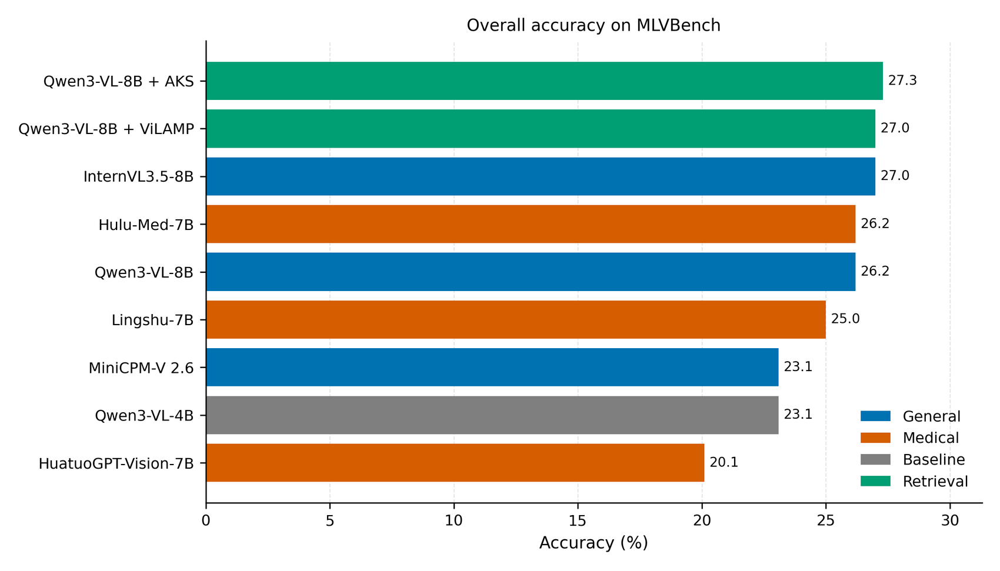
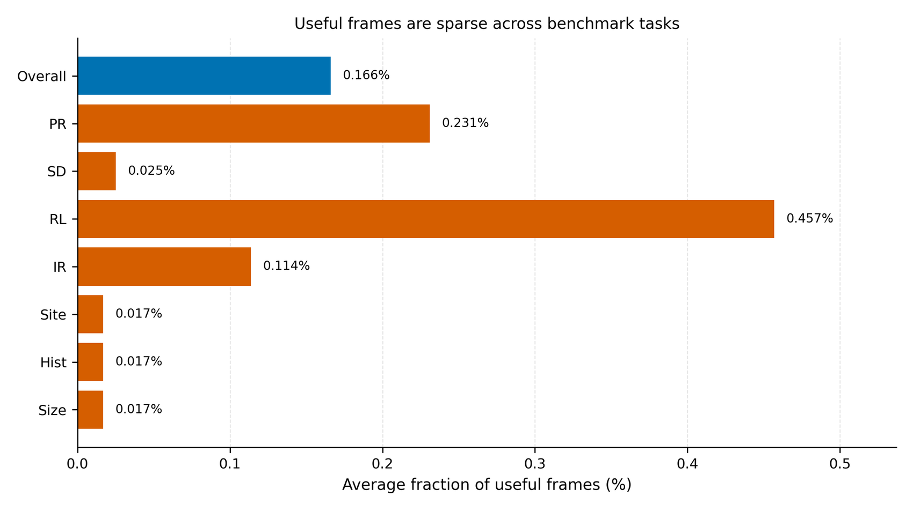
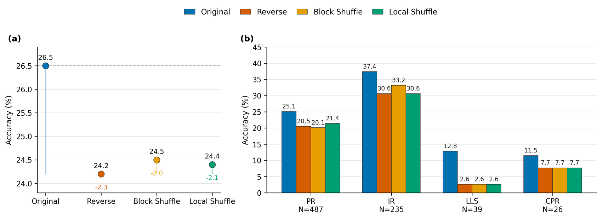
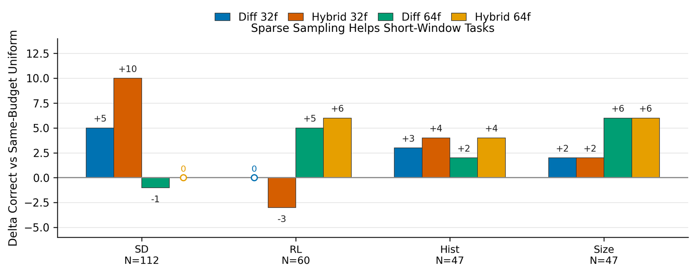
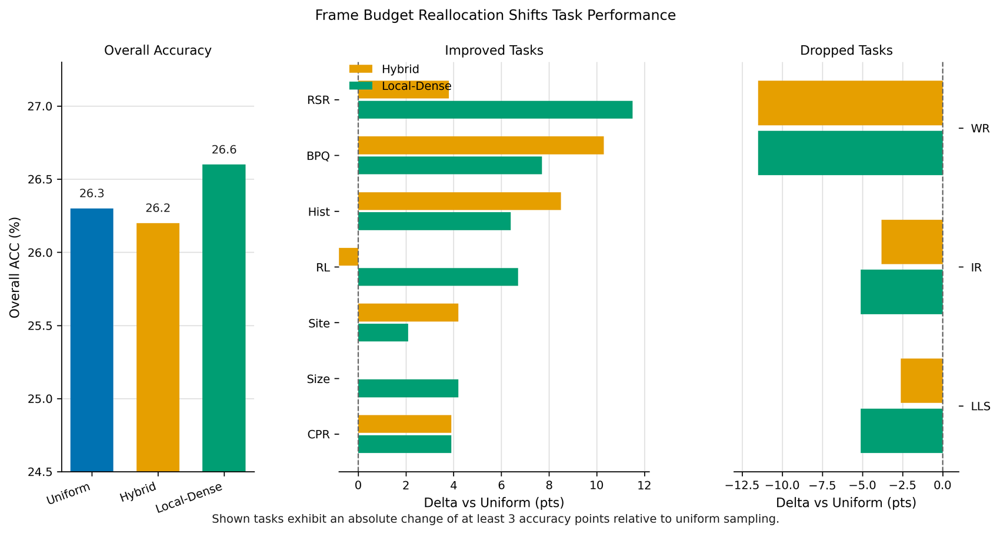
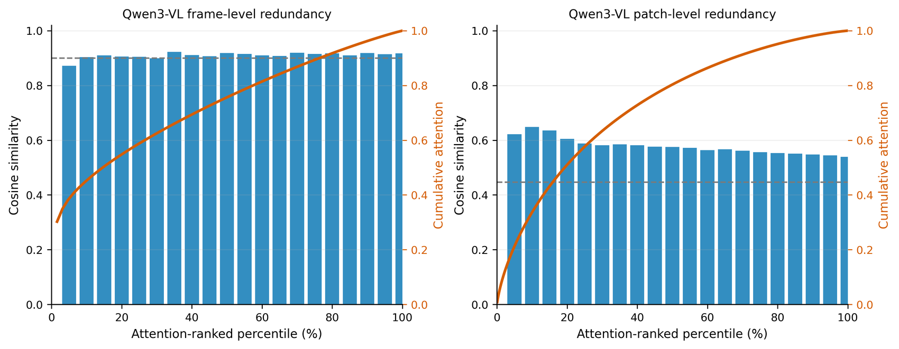

Full-procedure context
Videos are preserved as raw clinical procedures instead of trimmed to answer-bearing clips, forcing retrieval before reasoning.
Towards long-context medical video understanding in the wild.
A full-procedure benchmark for testing whether multimodal models can retrieve sparse clinical evidence, bind it to anatomical and temporal context, and perform multi-hop reasoning over long medical videos.
Benchmark Design
Natural long-video QA often succeeds by locating visually distinctive moments. Medical procedures are different: the scene can stay anatomically homogeneous for hours, while decisive evidence is subtle, rare, and context dependent.
Videos are preserved as raw clinical procedures instead of trimmed to answer-bearing clips, forcing retrieval before reasoning.
Only 1.7 useful frames appear per 1,000 frames on average, with a mean question-level evidence ratio of 0.166%.
Questions are grounded in source annotations and refined through filtering, distractor strengthening, natural rewriting, and human-in-the-loop verification.
Semantic tasks require locating events, binding them to context, and aggregating findings across distant windows of the same procedure.

Leaderboard
Even the strongest evaluated model reaches only 41.1% accuracy, showing that full-procedure medical video understanding remains unsolved.
| Rank | Model | Type | Frame Budget | Overall Acc. |
|---|---|---|---|---|
| 1 | Gemini-3.1-Pro-Preview | Closed-source MLLM | 32 | 41.1 |
| 2 | GPT-5.4 | Closed-source MLLM | 32 | 32.6 |
| 3 | GPT-5.4-mini | Closed-source MLLM | 32 | 31.2 |
| 4 | LLaVA-Video-72B | Open-source MLLM | 64 | 29.4 |
| 5 | Kimi-K2.5 | Closed-source MLLM | 64 | 29.3 |
| 6 | WFS-SB | Retrieval-style video MLLM | 128 | 28.1 |
| 7 | Lingshu-32B | Medical MLLM | 64 | 27.9 |
| - | Text-only Qwen3-VL-8B | Prompt-only sanity check | 0 | 27.8 |
The text-only row is a sanity check for textual shortcuts, not a visual model entry.
Analysis






Release
The Hugging Face repository provides the benchmark JSONL, relative video paths, US-Study videos, and a test split metadata card. Code and evaluation scripts are linked through the GitHub button.
Citation
The citation will be updated when the arXiv preprint is available.
@misc{medhorizon2026,
title = {MedHorizon: Towards Long-context Medical Video Understanding in the Wild},
author = {Anonymous},
year = {2026},
note = {Dataset benchmark}
}